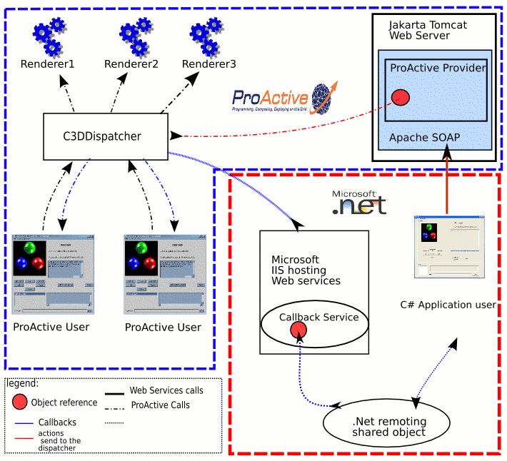
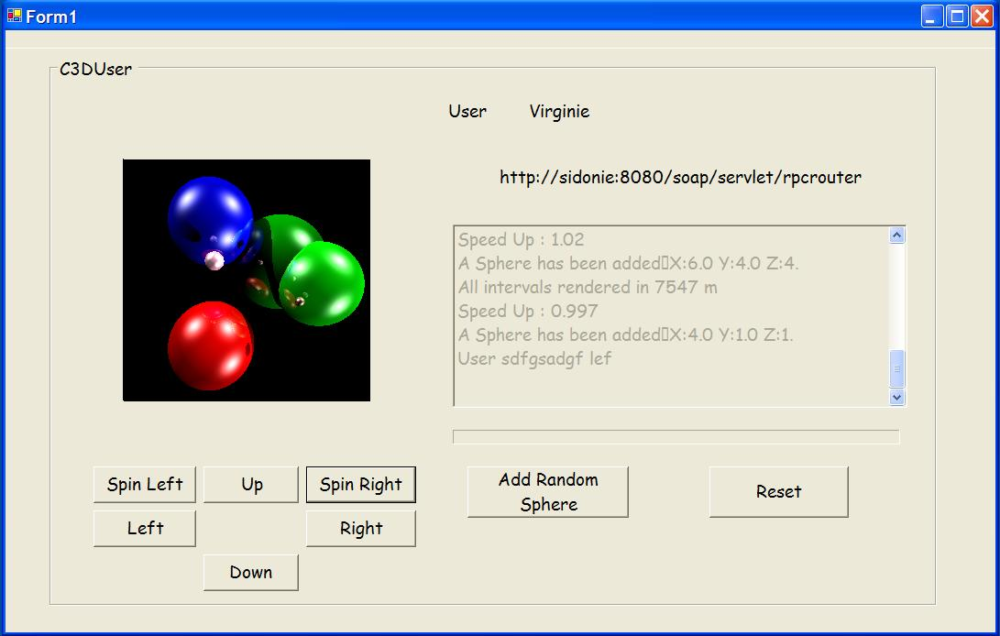

| back to API | back to index | prev | next |

|
|
This feature allows the call and monitoring of active objects and ProActive components from any client written in any foreign language.
Indeed, applications written in C#, for example, cannot communicate with
ProActive applications.
We choose the web services technology that enable interoperability
because they are based on XML and HTTP. Thus, any active object or
component can be accessible from any enabled web service language.
A web service is a software entity, providing one or several functionnalities, that can be exposed, discovered and accessed over the network. Moreover, web services technology allows heterogenous applications to communicate and exchange data in a remotely way. In our case, the usefull elements, of web services are :
This figure shows the steps when a active object is called via SOAP.
First of all, you need to install the Jakarta Tomcat web server here
and install it. You can find some documentation about it here .
You don't really have to do a lot of installation. Just
uncompress the archive.
To start and stop the server, launch the start and the shutdown scripts in the bin directory.
We also use a SOAP engine which is the Apache SOAP engine, available
here . This SOAP engine will be responsible of
locating and calling the service.
To install Apache SOAP refer to the server-side instructions.
The SOAP Engine is now installed ! You can verify, after starting the server that you access to the welcome page of Apache SOAP at : http://localhost:8080/soap/index.html.
Now we have to install ProActive into this SOAP engine. For that, follow these steps :
The steps for exporting and using an active object as a web service are the following :
A a = (A)ProActive.newActive("A", new Object [] {});
ProActive.exposeAsWebService(Object o,
String url,
String urn,
String [] methods);
where :
Proactive.exposeComponentAsWebService(Component component, String url, String componentName);where :
To undeploy an active object as a service, use the ProActive static method :
ProActive.unExposeAsWebService ( String urn, String url );
where :
To undeploy a component you have to specify the component name and the component( needed to know the interfaces to undeploy) :
ProActive.unExposeAsWebService ( String componentName , String url, Component component);
Once the active object or the interfaces component are deployed, you can access it via any web service
enabled client ( such as C#).
First of all, the client will get the WSDL file matching this
active object. This WSDL file is the "identity card" of the
service. It contains the web service public interfaces and its location.
Generally, WSDL files are used to generate a proxy to the
service. For example, for a given service, say "compute" ,you can get the WSDL document at
http://localhost:8080/servlet/wsdl?id=compute.
Now that this client knows what and where to call the service, it will send a SOAP message to
the web server, the web server looks into the message and perform the
right call then returns the reply into another SOAP message to the client.
Apache Soap supports all defined types in the SOAP 1.1
specification. All Java primitive types are supported but it is not
always the case for complex types. For Java Bean Objects, ProActive
register them in the Apache SOAP mapping registry, in order to use a
specific (de)serializer when such objects are exchanged. All is done
automatically, you don't have to matter about the registering of the
type mapping.
However, if the methods attributes types or return types are Java Beans, you
have to copy the beans classes you wrote into the $APACHE_SOAP_HOME/WEB_INF/classes.
Let's start with a simple example, an Hello world active object exposed as a web service :
public class HelloWorld implements Serializable {
public HelloWorld () {}
public String helloWorld (String name) {
return "Hello world !";
}
public static void main (String [] args) {
try {
HelloWorld hw = (HelloWorld)ProActive.newActive("HelloWorld", new Object []{});
ProActive.exposeAsWebService(hw,
"helloWorld","http://localhost:8080", new String [] { "helloWorld" });
} catch (ActiveObjectCreationException e) {
e.printStackTrace();
} catch (NodeException e) {
e.printStackTrace();
}
}
}
The active object hw has been deployed as a web service on the web
server located at "http://localhost:8080" . The accessible service
method is helloWorld.
Now that the server-side Web service is deployed, we can create a new
client application in Visual Studio .NET.
In your new Visual Studio Project :
... localhost.helloWorld hw = new localhost.helloWorld(); string s = hw.helloWorld (); ...
C3D is a Java benchmark application that measures the performance of a 3D raytracer renderer distributed over several Java virtual machines using ProActive. C3D is composed of several parts : the distributed engine (renderers) and the dispatcher that is an active objet. This dispactcher permits users to see the 3D scene and to collaborate. Users can send messages and render command to this dispatcher. This enhancement of C3D is to send commands to the dispatcher from any language. To perform such an enhancement, the Dispatcher object must be exposed as a web service in order to a C# client for example controls it. Only one instruction has been added in the main method :
ProActive.exposeAsWebService (dispatcher, "C3DDispatcher",
"http://localhost:8080", new String [] {
"rotateRight", "getPicture", "rotateLeft", "rotateUp",
"rotateDown", "getPixels", "getPixelMax", "waitForImage",
"spinClock", "spinUnclock", "addRandomSphere", "resetScene",
"registerWSUser", "unregisterWSUser"
});
Once the dispatcher is deployed as a web service, we have a WSDL url : http://localhost:8080/soap/servlet/id=C3DDispactcher It will be usefull to construct the dispatcher client.
First of all, we have to generate the service proxy following the
steps described for the hello world access.
All the SOAP calls will be managed by the generated proxy
localhost.C3DDispatcher .

C# client registers to the C3D dispatcher and then can send commands.
C3D is a collaborative application. Indeed, when a client performs a
call, all others users must be advised by the dispatcher. Although
dispatcher can contact ProActive applications, it cannot communicate
with other applications (it cannot initiate the communication). In
other words, the dispacher must communicate remotely with an
application witten in another language.
The answer to this problem is to use .Net web service on the C# user
machine. Such a web service is waiting for callback requests that come
from dispatcher. When receiving a request, the service sends it to the
client via a .Net Remoting shared objet. Thus, when the .Net web
service receives a callback request, the C# client is updated thanks
to propagated events.
Here are screenshots of the user application :
| The first screenshot is a classic ProActive application ; |
 |
| This is the C# application that communicates via SOAP with the same dispatcher than the ProActive user uses. |  |
You can find here the whole C# Visual Studio .Net project.
N.B : In order to run this project, you must install the Microsoft IIS server.